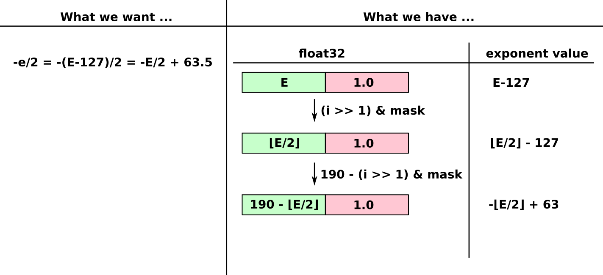

Fast Inverse Square Root Hack: A simplified version
Insights into a simplified version of the famous hack used in a 3D computer game from the 90s.Single precision floating point numbers
A floating point number f is represented as \(f=s \cdot m \cdot 2^e = s \cdot m \cdot 2^{E-127}\). Here s is the sign (+, -), m is the mantissa (digit string of the number with \(1.0 \le m \lt 2.0\)), e is the exponent and E is the "biased" exponent which is actually stored in memory. As an example, \(3=+1.5 \cdot 2^1\), so s=+, m=1.5, e=1 and E=128. A single precision floating point number (or float32 for short) consists of 32bits, using 1bit for the sign s, 8bit for the biased exponent E, and 23bit for the mantissa.
Fig. 1: Bit-level representation of a float32 number. The first row shows the sizes of the bit fields while the second row shows the offsets (zero-based numbering).
An approximation for 1/√(x)
We have a floating point number (ignoring the sign bit from now on) \(x=m \cdot 2^e\) and want to compute \(\frac{1}{\sqrt{x}} = \frac{1}{\sqrt{m \cdot 2^e}} = \frac{1}{\sqrt{m}} \cdot 2^{-e/2}\). A simple approximation would be to ignore the mantissa and just care about the exponent. Then we have \(\frac{1}{\sqrt{x}} \approx 2^{-e/2}\). This approximation is correct if m=1.
Implementing the approximation using "bit-magic"
We now implement the approximation \(\frac{1}{\sqrt{x}} \approx 2^{-e/2} = 2^{-(E-127)/2} = 2^{-E/2+127/2}\) in C++. As already mentioned, only the biased exponent E is stored in memory, and the bias term -127 is assumed implicitly. We will only use one integer subtraction, one bit-shift and one bit-mask and call this procedure "bit-magic" from now on. The steps are as follows (illustrated in Fig. 2):
- Interpret the bits of the float32 number as an integer to allow for integer subtraction and bit manipulation in C++
- Clear (set to zero) all bits except for the exponent field
- The desired value of the exponent is \(-e/2 = -E/2+127/2\)
- Divide the integer representation by 2 to get \(\lfloor E/2 \rfloor\) (the brackets indicate integer division, e.g. \(\lfloor 4/2 \rfloor=2\) and \(\lfloor 3/2 \rfloor=1\))
- Instead of an integer division by 2, we can also use a bitwise right-shift of the integer (and use a mask to clear the one bit shifted out of the exponent field)
- float32 uses the implicit bias term, so even though in memory we have a value of \(\lfloor E/2 \rfloor\), this actually represents the exponent \(\lfloor E/2 \rfloor -127\)
- We have to correct the value in the exponent field by a value X such that the following holds: \(-e/2 = -E/2+127/2 = X - \lfloor E/2 \rfloor - 127\)
- Ignoring the integer division for a moment (i.e. ignore the brackets of \(\lfloor E/2 \rfloor\)), X obviously must have the value \(\frac{3 \cdot 127}{2}=190.5\)
- We can't represent 190.5 as integer, so let's use 190 instead, later we analyze the error introduced by this 0.5 offset
- As the exponent field starts at bit 23, we have to shift all values 23 bits to the left (e.g., 190<<23), however, as this is not important for the discussion it is ignored for now
- In summary we have \(e_{M} = 190 - \lfloor E/2 \rfloor - 127\), with \(2^{e_{M}}\) the approximation computed for \(\frac{1}{\sqrt{x}}\)
 Fig. 2: Illustration of the operations applied to the integer representation i of the float32 value.
Error of the "bit-magic"
The value produced by the "bit-magic" is \(2^{e_{M}}\) with \(e_{M} = 190 - \lfloor E/2 \rfloor - 127 = - \lfloor(e+127)/2 \rfloor + 63\). To get rid of the integer division we have to distinguish two cases: \[e_{M} = \begin{cases} -\lfloor (e+127)/2 \rfloor + 63 = -e/2 + 63 - 63 = -e/2 & e \quad even \\ -\lfloor (e+127)/2 \rfloor + 63 = -(e+127)/2 = -e/2 -63.5 + 63 = -e/2 - 0.5 & e \quad odd \end{cases} \] As can be seen, the "bit-magic" does not always match the approximation \(2^{-e/2}\) we wanted to implement, but that's still fine as we just need an initial guess for the Newton refinement. Our implementation matches the approximation for even e and is off by a factor \(2^{-0.5} = 1/\sqrt{2}\) for odd e. The approximation itself is of course only correct for a mantissa m=1. Fig. 3 shows exactly this: for odd e values (x is \(2^1=2\) or \(2^3=8\)) and m=1, the "bit-magic" is by a factor \(1/\sqrt{2}\) too small. For even e values (x is \(2^0=1\) or \(2^2=4\)) and m=1, the "bit-magic" matches the true value exactly.
 Fig. 3: True value of \(1/\sqrt{x}\) in green and approximation computed by "bit-magic" in red
for the interval \(x \in [1, 16]\).
Fig. 3: True value of \(1/\sqrt{x}\) in green and approximation computed by "bit-magic" in red
for the interval \(x \in [1, 16]\).
 Fig. 4: Relative error of the "bit-magic" (left) and the Newton refinement (right) for the
interval \(x \in [1, 16]\).
Fig. 4: Relative error of the "bit-magic" (left) and the Newton refinement (right) for the
interval \(x \in [1, 16]\).
Newton refinement
The "bit-magic" gives a rough estimate for the true value, but can have a relative error of up to 41%. To improve on this, a small number of Newton iterations is applied. Newton's method computes the zero of a function, i.e. it computes y such that \(f(y)=0\). We re-formulate \(y=1/\sqrt{x}\) into a zero-finding problem, that is \(f(y) = y^2-1/x = 0\). Applying the Newton update \(y_{k+1}=y_k - f(y_k)/f'(y_k)\) gives a better approximation for y than we had before, where f'(y) is the first derivative of f(y). The maximum relative error decreases fast:
- 0 iterations: 41%
- 1 iteration: 6%
- 2 iterations: <0.2%
- 3 iterations: <0.0003%
C++ implementation
#include <cstdint> #include <cstddef> float fast_inv_sqrt(float x) { float y = x; // y holds the current guess for 1/sqrt(x) uint32_t *i = reinterpret_cast<uint32_t *>(&y); // i points to current guess y const uint32_t exp_mask = 0x7F800000; // 0xFF<<23 const uint32_t magic_number = 0x5f000000; // 190<<23 // initial guess using magic number *i = magic_number - ((*i >> 1) & exp_mask); // refine guess using small number of Newton iterations const size_t num_newton_iter = 2; for (size_t i = 0; i < num_newton_iter; ++i) { y = (x * y * y + 1) / (2 * x * y); } return y; }
Conclusion
Compared to the original hack, the version analyzed in this article only uses the exponent bit field of a float32 number. This gives an order of magnitude worse relative error, however, it also makes analyzing the "bit-magic" much easier. Using only two Newton iterations drives the worst-case relative error down to <0.2%. The implementation ignores the sign bit and does not work for de-normalized float32 numbers.
Harald Scheidl, 2020